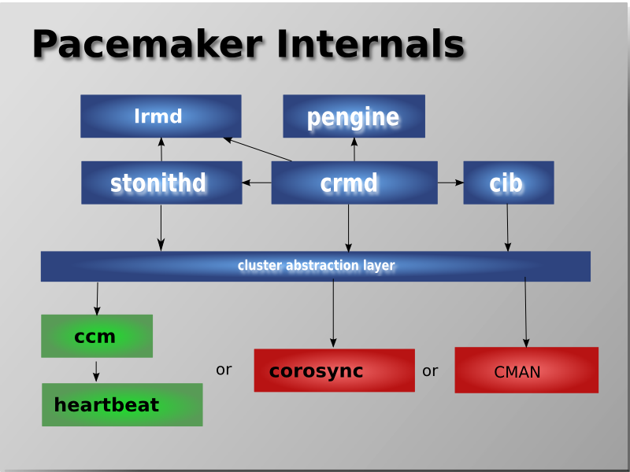
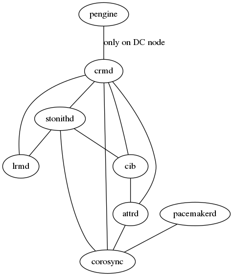
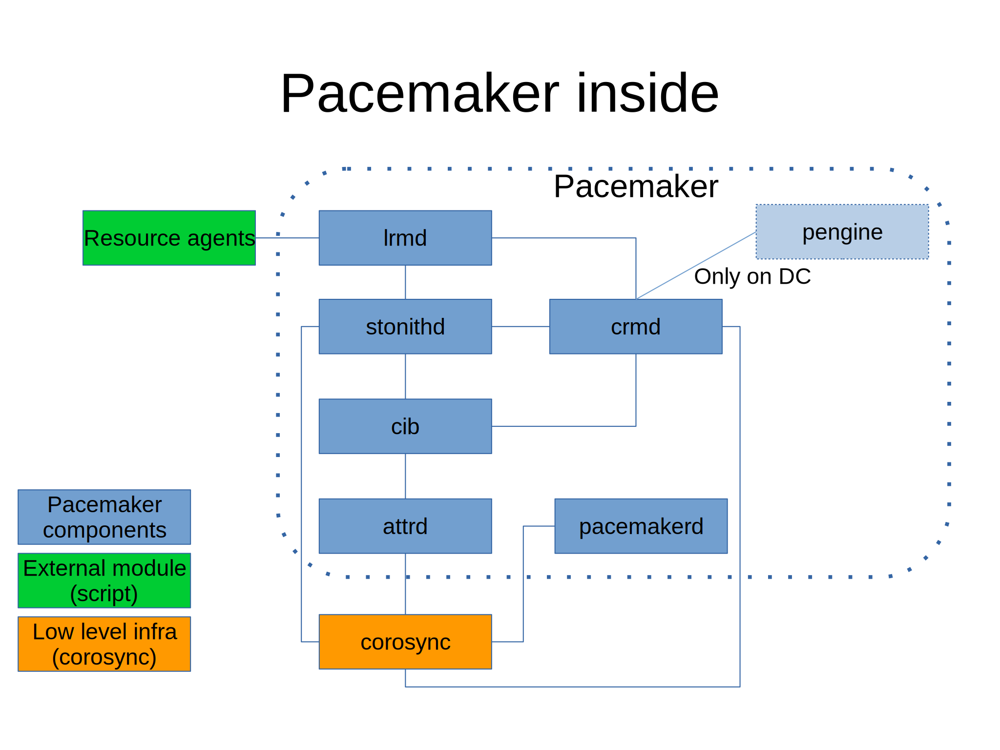

14. Pacemaker inside¶
14.1. Architecture¶
Quote from http://clusterlabs.org/
Key components of pacemaker
- Cluster Information Base (CIB)
- Cluster Resource Management daemon (CRMd)
- Local Resource Management daemon (LRMd)
- Policy Engine (PEngine or PE)
- Fencing daemon (STONITHd)
14.4. Connections between components of pacemaker¶
To look into connections between the internal components of pacemaker, I’d like to start with crmd (PID=30042)
[root@a2 ~]# lsof -p 30042
COMMAND PID USER FD TYPE DEVICE SIZE/OFF NODE NAME
crmd 30042 hacluster cwd DIR 253,0 22 33720369 /var/lib/pacemaker/cores
crmd 30042 hacluster rtd DIR 253,0 4096 128 /
crmd 30042 hacluster txt REG 253,0 349688 17317430 /usr/libexec/pacemaker/crmd
crmd 30042 hacluster mem REG 0,17 135168 61775 /dev/shm/qb-attrd-event-30040-30042-10-data
crmd 30042 hacluster mem REG 0,17 135168 61773 /dev/shm/qb-attrd-response-30040-30042-10-data
crmd 30042 hacluster mem REG 0,17 135168 61771 /dev/shm/qb-attrd-request-30040-30042-10-data
crmd 30042 hacluster mem REG 0,17 135168 61722 /dev/shm/qb-stonith-ng-event-30038-30042-10-data
crmd 30042 hacluster mem REG 0,17 135168 61720 /dev/shm/qb-stonith-ng-response-30038-30042-10-data
crmd 30042 hacluster mem REG 0,17 135168 61718 /dev/shm/qb-stonith-ng-request-30038-30042-10-data
crmd 30042 hacluster mem REG 0,17 135168 62964 /dev/shm/qb-lrmd-event-30039-30042-8-data
crmd 30042 hacluster mem REG 0,17 1052672 62914 /dev/shm/qb-quorum-event-30021-30042-25-data
crmd 30042 hacluster mem REG 0,17 1052672 62912 /dev/shm/qb-quorum-response-30021-30042-25-data
crmd 30042 hacluster mem REG 0,17 1052672 62910 /dev/shm/qb-quorum-request-30021-30042-25-data
crmd 30042 hacluster mem REG 0,17 1052672 62885 /dev/shm/qb-cpg-event-30021-30042-23-data
crmd 30042 hacluster mem REG 0,17 1052672 62883 /dev/shm/qb-cpg-response-30021-30042-23-data
crmd 30042 hacluster mem REG 0,17 1052672 62881 /dev/shm/qb-cpg-request-30021-30042-23-data
crmd 30042 hacluster mem REG 0,17 528384 61681 /dev/shm/qb-cib_shm-event-30037-30042-11-data
crmd 30042 hacluster mem REG 0,17 528384 61679 /dev/shm/qb-cib_shm-response-30037-30042-11-data
crmd 30042 hacluster mem REG 253,0 61928 33919248 /usr/lib64/libnss_files-2.17.so
crmd 30042 hacluster mem REG 253,0 398264 33763412 /usr/lib64/libpcre.so.1.2.0
crmd 30042 hacluster mem REG 253,0 147096 33763422 /usr/lib64/libselinux.so.1
crmd 30042 hacluster mem REG 253,0 110808 33919258 /usr/lib64/libresolv-2.17.so
crmd 30042 hacluster mem REG 253,0 15688 33836062 /usr/lib64/libkeyutils.so.1.5
crmd 30042 hacluster mem REG 253,0 62720 33867687 /usr/lib64/libkrb5support.so.0.1
crmd 30042 hacluster mem REG 253,0 202576 34220670 /usr/lib64/libk5crypto.so.3.1
crmd 30042 hacluster mem REG 253,0 15840 33763495 /usr/lib64/libcom_err.so.2.1
crmd 30042 hacluster mem REG 253,0 950496 33867685 /usr/lib64/libkrb5.so.3.3
crmd 30042 hacluster mem REG 253,0 316528 34220668 /usr/lib64/libgssapi_krb5.so.2.2
crmd 30042 hacluster mem REG 253,0 449880 33867700 /usr/lib64/libssl.so.1.0.1e
crmd 30042 hacluster mem REG 253,0 2017168 33867698 /usr/lib64/libcrypto.so.1.0.1e
crmd 30042 hacluster mem REG 253,0 32296 33763533 /usr/lib64/libffi.so.6.0.1
crmd 30042 hacluster mem REG 253,0 118792 33763436 /usr/lib64/libaudit.so.1.0.0
crmd 30042 hacluster mem REG 253,0 153192 33721430 /usr/lib64/liblzma.so.5.0.99
crmd 30042 hacluster mem REG 253,0 1141560 33919238 /usr/lib64/libm-2.17.so
crmd 30042 hacluster mem REG 253,0 494440 34220665 /usr/lib64/libgmp.so.10.2.0
crmd 30042 hacluster mem REG 253,0 160720 33836129 /usr/lib64/libhogweed.so.2.5
crmd 30042 hacluster mem REG 253,0 201280 33836131 /usr/lib64/libnettle.so.4.7
crmd 30042 hacluster mem REG 253,0 82144 33836096 /usr/lib64/libtasn1.so.6.2.3
crmd 30042 hacluster mem REG 253,0 465384 34157054 /usr/lib64/libtspi.so.1.2.0
crmd 30042 hacluster mem REG 253,0 290864 33763916 /usr/lib64/libp11-kit.so.0.0.0
crmd 30042 hacluster mem REG 253,0 90632 33763425 /usr/lib64/libz.so.1.2.7
crmd 30042 hacluster mem REG 253,0 142304 33919256 /usr/lib64/libpthread-2.17.so
crmd 30042 hacluster mem REG 253,0 44096 33919260 /usr/lib64/librt-2.17.so
crmd 30042 hacluster mem REG 253,0 19520 33919236 /usr/lib64/libdl-2.17.so
crmd 30042 hacluster mem REG 253,0 152704 33719390 /usr/lib64/libqb.so.0.17.1
crmd 30042 hacluster mem REG 253,0 41248 33719395 /usr/lib64/libltdl.so.7.3.0
crmd 30042 hacluster mem REG 253,0 1287904 33763537 /usr/lib64/libglib-2.0.so.0.4200.2
crmd 30042 hacluster mem REG 253,0 61648 33981714 /usr/lib64/libpam.so.0.83.1
crmd 30042 hacluster mem REG 253,0 20032 33981902 /usr/lib64/libuuid.so.1.3.0
crmd 30042 hacluster mem REG 253,0 2112384 33919230 /usr/lib64/libc-2.17.so
crmd 30042 hacluster mem REG 253,0 1505208 33763518 /usr/lib64/libxml2.so.2.9.1
crmd 30042 hacluster mem REG 253,0 258344 33836141 /usr/lib64/libxslt.so.1.1.28
crmd 30042 hacluster mem REG 253,0 68192 33763442 /usr/lib64/libbz2.so.1.0.6
crmd 30042 hacluster mem REG 253,0 10912 33719464 /usr/lib64/libcorosync_common.so.4.0.0
crmd 30042 hacluster mem REG 253,0 1279960 34157059 /usr/lib64/libgnutls.so.28.41.0
crmd 30042 hacluster mem REG 253,0 11224 33719468 /usr/lib64/libquorum.so.5.0.0
crmd 30042 hacluster mem REG 253,0 23864 33719462 /usr/lib64/libcmap.so.4.1.0
crmd 30042 hacluster mem REG 253,0 15216 33719460 /usr/lib64/libcfg.so.6.0.0
crmd 30042 hacluster mem REG 253,0 23640 33719466 /usr/lib64/libcpg.so.4.1.0
crmd 30042 hacluster mem REG 253,0 304536 33764042 /usr/lib64/libdbus-1.so.3.7.4
crmd 30042 hacluster mem REG 253,0 55480 33719505 /usr/lib64/liblrmd.so.1.2.1
crmd 30042 hacluster mem REG 253,0 89856 33719503 /usr/lib64/libcrmservice.so.3.0.0
crmd 30042 hacluster mem REG 253,0 354960 33719501 /usr/lib64/libcrmcommon.so.3.5.0
crmd 30042 hacluster mem REG 253,0 95384 33719520 /usr/lib64/libcrmcluster.so.4.1.0
crmd 30042 hacluster mem REG 253,0 127920 33719499 /usr/lib64/libcib.so.4.0.2
crmd 30042 hacluster mem REG 253,0 42576 33719507 /usr/lib64/libpe_rules.so.2.0.5
crmd 30042 hacluster mem REG 253,0 32560 33719515 /usr/lib64/libtransitioner.so.2.0.4
crmd 30042 hacluster mem REG 253,0 63496 33719513 /usr/lib64/libstonithd.so.2.1.3
crmd 30042 hacluster mem REG 253,0 164440 33919225 /usr/lib64/ld-2.17.so
crmd 30042 hacluster mem REG 0,17 8248 61774 /dev/shm/qb-attrd-event-30040-30042-10-header
crmd 30042 hacluster mem REG 0,17 8248 61772 /dev/shm/qb-attrd-response-30040-30042-10-header
crmd 30042 hacluster mem REG 0,17 8252 61770 /dev/shm/qb-attrd-request-30040-30042-10-header
crmd 30042 hacluster mem REG 0,17 8248 61721 /dev/shm/qb-stonith-ng-event-30038-30042-10-header
crmd 30042 hacluster mem REG 0,17 8248 61719 /dev/shm/qb-stonith-ng-response-30038-30042-10-header
crmd 30042 hacluster mem REG 0,17 8252 61717 /dev/shm/qb-stonith-ng-request-30038-30042-10-header
crmd 30042 hacluster mem REG 0,17 8248 62963 /dev/shm/qb-lrmd-event-30039-30042-8-header
crmd 30042 hacluster mem REG 0,17 135168 62962 /dev/shm/qb-lrmd-response-30039-30042-8-data
crmd 30042 hacluster mem REG 0,17 8248 62961 /dev/shm/qb-lrmd-response-30039-30042-8-header
crmd 30042 hacluster mem REG 0,17 135168 62960 /dev/shm/qb-lrmd-request-30039-30042-8-data
crmd 30042 hacluster mem REG 0,17 8252 62959 /dev/shm/qb-lrmd-request-30039-30042-8-header
crmd 30042 hacluster mem REG 0,17 8248 62913 /dev/shm/qb-quorum-event-30021-30042-25-header
crmd 30042 hacluster mem REG 0,17 8248 62911 /dev/shm/qb-quorum-response-30021-30042-25-header
crmd 30042 hacluster mem REG 0,17 8252 62909 /dev/shm/qb-quorum-request-30021-30042-25-header
crmd 30042 hacluster mem REG 0,17 8248 62884 /dev/shm/qb-cpg-event-30021-30042-23-header
crmd 30042 hacluster mem REG 0,17 8248 62882 /dev/shm/qb-cpg-response-30021-30042-23-header
crmd 30042 hacluster mem REG 0,17 8252 62880 /dev/shm/qb-cpg-request-30021-30042-23-header
crmd 30042 hacluster mem REG 0,17 8248 61680 /dev/shm/qb-cib_shm-event-30037-30042-11-header
crmd 30042 hacluster mem REG 0,17 528384 61677 /dev/shm/qb-cib_shm-request-30037-30042-11-data
crmd 30042 hacluster mem REG 0,17 8248 61678 /dev/shm/qb-cib_shm-response-30037-30042-11-header
crmd 30042 hacluster mem REG 0,17 8252 61676 /dev/shm/qb-cib_shm-request-30037-30042-11-header
crmd 30042 hacluster 0r CHR 1,3 0t0 5695 /dev/null
crmd 30042 hacluster 1w CHR 1,3 0t0 5695 /dev/null
crmd 30042 hacluster 2w CHR 1,3 0t0 5695 /dev/null
crmd 30042 hacluster 3r CHR 1,9 0t0 5700 /dev/urandom
crmd 30042 hacluster 4u a_inode 0,9 0 5691 [eventfd]
crmd 30042 hacluster 5u REG 253,0 709785 17317506 /var/log/cluster/corosync.log
crmd 30042 hacluster 6u unix 0xffff88003c25a580 0t0 61639 socket
crmd 30042 hacluster 7u unix 0xffff88003c258000 0t0 61674 socket
crmd 30042 hacluster 8u unix 0xffff88003c25a1c0 0t0 61682 socket
crmd 30042 hacluster 9u unix 0xffff88003c258b40 0t0 61686 socket
crmd 30042 hacluster 10u unix 0xffff88003c814f00 0t0 61710 socket
crmd 30042 hacluster 11u unix 0xffff88003c815680 0t0 61714 @crmd
crmd 30042 hacluster 12u unix 0xffff88003c814780 0t0 61715 socket
crmd 30042 hacluster 13u unix 0xffff88003c815e00 0t0 61768 socket
crmd seems to communicate with other components through socket.
[root@a2 ~]# ss -axp | grep crmd
u_str LISTEN 0 128 @crmd 61714 * 0 users:(("crmd",pid=30042,fd=11))
u_dgr UNCONN 0 0 * 61639 * 295 users:(("crmd",pid=30042,fd=6))
u_str ESTAB 0 0 * 61682 * 62879 users:(("crmd",pid=30042,fd=8))
u_str ESTAB 0 0 * 61715 * 61716 users:(("crmd",pid=30042,fd=12))
u_str ESTAB 0 0 * 61674 * 61675 users:(("crmd",pid=30042,fd=7))
u_str ESTAB 0 0 * 61686 * 62908 users:(("crmd",pid=30042,fd=9))
u_str ESTAB 0 0 * 61768 * 61769 users:(("crmd",pid=30042,fd=13))
u_str ESTAB 0 0 * 61710 * 62958 users:(("crmd",pid=30042,fd=10))
Who is connecting with crmd? ESTABLISHED socket connections with crmd are
[root@a2 ~]# ss -axp | grep 62879
u_str ESTAB 0 0 * 61682 * 62879 users:(("crmd",pid=30042,fd=8))
u_str ESTAB 0 0 @cpg 62879 * 61682 users:(("corosync",pid=30021,fd=23))
[root@a2 ~]# ss -axp | grep 61716
u_str ESTAB 0 0 @stonith-ng 61716 * 61715 users:(("stonithd",pid=30038,fd=10))
u_str ESTAB 0 0 * 61715 * 61716 users:(("crmd",pid=30042,fd=12))
[root@a2 ~]# ss -axp | grep 61675
u_str ESTAB 0 0 @cib_shm 61675 * 61674 users:(("cib",pid=30037,fd=11))
u_str ESTAB 0 0 * 61674 * 61675 users:(("crmd",pid=30042,fd=7))
[root@a2 ~]# ss -axp | grep 62908
u_str ESTAB 0 0 @quorum 62908 * 61686 users:(("corosync",pid=30021,fd=25))
u_str ESTAB 0 0 * 61686 * 62908 users:(("crmd",pid=30042,fd=9))
[root@a2 ~]# ss -axp | grep 61769
u_str ESTAB 0 0 @attrd 61769 * 61768 users:(("attrd",pid=30040,fd=10))
u_str ESTAB 0 0 * 61768 * 61769 users:(("crmd",pid=30042,fd=13))
[root@a2 ~]# ss -axp | grep 62958
u_str ESTAB 0 0 @lrmd 62958 * 61710 users:(("lrmd",pid=30039,fd=8))
u_str ESTAB 0 0 * 61710 * 62958 users:(("crmd",pid=30042,fd=10))
Turned out that corosync, stonithd, cib, attrd, and lrmd are connecting with crmd through sockets. Adding to that, crmd is listening on port 61714.
“295” is the listening port of systemd-journal for logging.
[root@a2 ~]# ss -axp | grep " 295 "
u_dgr UNCONN 0 0 /dev/log 295 * 0 users:(("systemd-journal",pid=494,fd=5),("systemd",pid=1,fd=27))
u_dgr UNCONN 0 0 * 16637 * 295 users:(("master",pid=910,fd=3))
u_dgr UNCONN 0 0 * 17299 * 295 users:(("polkitd",pid=1381,fd=10))
u_dgr UNCONN 0 0 * 62657 * 295 users:(("pacemakerd",pid=30036,fd=5))
u_dgr UNCONN 0 0 * 61639 * 295 users:(("crmd",pid=30042,fd=6))
u_dgr UNCONN 0 0 * 15424 * 295 users:(("dbus-daemon",pid=657,fd=12))
u_dgr UNCONN 0 0 * 75580 * 295 users:(("sshd",pid=6989,fd=4))
u_dgr UNCONN 0 0 * 61649 * 295 users:(("pengine",pid=30041,fd=6))
u_dgr UNCONN 0 0 * 17667 * 295 users:(("qmgr",pid=919,fd=7))
u_dgr UNCONN 0 0 * 15209 * 295 users:(("crond",pid=702,fd=4))
u_dgr UNCONN 0 0 * 62516 * 295 users:(("corosync",pid=30021,fd=4))
u_dgr UNCONN 0 0 * 62718 * 295 users:(("lrmd",pid=30039,fd=5))
u_dgr UNCONN 0 0 * 61630 * 295 users:(("cib",pid=30037,fd=6))
u_dgr UNCONN 0 0 * 65259 * 295 users:(("pickup",pid=32391,fd=7))
u_dgr UNCONN 0 0 * 13310 * 295 users:(("auditd",pid=630,fd=5))
u_dgr UNCONN 0 0 * 18449 * 295 users:(("rhnsd",pid=1471,fd=0))
u_dgr UNCONN 0 0 * 16612 * 295 users:(("dhclient",pid=1377,fd=3))
u_dgr UNCONN 0 0 * 61631 * 295 users:(("attrd",pid=30040,fd=6))
u_dgr UNCONN 0 0 * 62754 * 295 users:(("stonithd",pid=30038,fd=5))
Next, on lrmd
[root@a2 ~]# ss -axp | grep lrmd
u_str LISTEN 0 128 @lrmd 62719 * 0 users:(("lrmd",pid=30039,fd=7))
u_str ESTAB 0 0 * 63077 * 61777 users:(("lrmd",pid=30039,fd=9))
u_dgr UNCONN 0 0 * 62718 * 295 users:(("lrmd",pid=30039,fd=5))
u_str ESTAB 0 0 @lrmd 62958 * 61710 users:(("lrmd",pid=30039,fd=8))
lrmd is listening on port 62719. Two established connections are between stonithd and crmd like follows.
[root@a2 ~]# ss -axp | grep 61777
u_str ESTAB 0 0 * 63077 * 61777 users:(("lrmd",pid=30039,fd=9))
u_str ESTAB 0 0 @stonith-ng 61777 * 63077 users:(("stonithd",pid=30038,fd=11))
[root@a2 ~]# ss -axp | grep 61710
u_str ESTAB 0 0 @lrmd 62958 * 61710 users:(("lrmd",pid=30039,fd=8))
u_str ESTAB 0 0 * 61710 * 62958 users:(("crmd",pid=30042,fd=10))
How about stonithd, then?
[root@a2 ~]# ss -axp | grep stonithd
u_str LISTEN 0 128 @stonith-ng 61697 * 0 users:(("stonithd",pid=30038,fd=9))
u_str ESTAB 0 0 * 62755 * 62756 users:(("stonithd",pid=30038,fd=7))
u_str ESTAB 0 0 * 61688 * 61689 users:(("stonithd",pid=30038,fd=8))
u_str ESTAB 0 0 @stonith-ng 61716 * 61715 users:(("stonithd",pid=30038,fd=10))
u_str ESTAB 0 0 @stonith-ng 61777 * 63077 users:(("stonithd",pid=30038,fd=11))
u_dgr UNCONN 0 0 * 62754 * 295 users:(("stonithd",pid=30038,fd=5))
stonithd is listening on pot 61697 and connecting with corosync, cib, crmd, and lrmd like follows.
[root@a2 ~]# ss -axp | grep 62756
u_str ESTAB 0 0 * 62755 * 62756 users:(("stonithd",pid=30038,fd=7))
u_str ESTAB 0 0 @cpg 62756 * 62755 users:(("corosync",pid=30021,fd=22))
[root@a2 ~]# ss -axp | grep 61689
u_str ESTAB 0 0 @cib_rw 61689 * 61688 users:(("cib",pid=30037,fd=12))
u_str ESTAB 0 0 * 61688 * 61689 users:(("stonithd",pid=30038,fd=8))
[root@a2 ~]# ss -axp | grep 61715
u_str ESTAB 0 0 @stonith-ng 61716 * 61715 users:(("stonithd",pid=30038,fd=10))
u_str ESTAB 0 0 * 61715 * 61716 users:(("crmd",pid=30042,fd=12))
[root@a2 ~]# ss -axp | grep 63077
u_str ESTAB 0 0 * 63077 * 61777 users:(("lrmd",pid=30039,fd=9))
u_str ESTAB 0 0 @stonith-ng 61777 * 63077 users:(("stonithd",pid=30038,fd=11))
cib
[root@a2 ~]# ss -axp | grep cib
u_str LISTEN 0 128 @cib_ro 62850 * 0 users:(("cib",pid=30037,fd=8))
u_str LISTEN 0 128 @cib_rw 62851 * 0 users:(("cib",pid=30037,fd=9))
u_str LISTEN 0 128 @cib_shm 62852 * 0 users:(("cib",pid=30037,fd=10))
u_str ESTAB 0 0 @cib_rw 61700 * 61699 users:(("cib",pid=30037,fd=13))
u_str ESTAB 0 0 @cib_rw 61689 * 61688 users:(("cib",pid=30037,fd=12))
u_str ESTAB 0 0 @cib_shm 61675 * 61674 users:(("cib",pid=30037,fd=11))
u_str ESTAB 0 0 * 61644 * 62785 users:(("cib",pid=30037,fd=7))
u_dgr UNCONN 0 0 * 61630 * 295 users:(("cib",pid=30037,fd=6))
cib is listening on port 62850, 62851, and 62852 and connecting with attrd, stonithd, and crmd.
[root@a2 ~]# ss -axp | grep 61699
u_str ESTAB 0 0 @cib_rw 61700 * 61699 users:(("cib",pid=30037,fd=13))
u_str ESTAB 0 0 * 61699 * 61700 users:(("attrd",pid=30040,fd=9))
[root@a2 ~]# ss -axp | grep 61688
u_str ESTAB 0 0 @cib_rw 61689 * 61688 users:(("cib",pid=30037,fd=12))
u_str ESTAB 0 0 * 61688 * 61689 users:(("stonithd",pid=30038,fd=8))
[root@a2 ~]# ss -axp | grep 61674
u_str ESTAB 0 0 @cib_shm 61675 * 61674 users:(("cib",pid=30037,fd=11))
u_str ESTAB 0 0 * 61674 * 61675 users:(("crmd",pid=30042,fd=7))
attrd is connecting with crmd, corosync, and cib
[root@a2 ~]# ss -axp | grep attrd
u_str LISTEN 0 128 @attrd 61671 * 0 users:(("attrd",pid=30040,fd=8))
u_str ESTAB 0 0 @attrd 61769 * 61768 users:(("attrd",pid=30040,fd=10))
u_dgr UNCONN 0 0 * 61631 * 295 users:(("attrd",pid=30040,fd=6))
u_str ESTAB 0 0 * 61634 * 62736 users:(("attrd",pid=30040,fd=7))
u_str ESTAB 0 0 * 61699 * 61700 users:(("attrd",pid=30040,fd=9))
[root@a2 ~]# ss -axp | grep 61768
u_str ESTAB 0 0 @attrd 61769 * 61768 users:(("attrd",pid=30040,fd=10))
u_str ESTAB 0 0 * 61768 * 61769 users:(("crmd",pid=30042,fd=13))
[root@a2 ~]# ss -axp | grep 62736
u_str ESTAB 0 0 @cpg 62736 * 61634 users:(("corosync",pid=30021,fd=21))
u_str ESTAB 0 0 * 61634 * 62736 users:(("attrd",pid=30040,fd=7))
[root@a2 ~]# ss -axp | grep 61700
u_str ESTAB 0 0 @cib_rw 61700 * 61699 users:(("cib",pid=30037,fd=13))
u_str ESTAB 0 0 * 61699 * 61700 users:(("attrd",pid=30040,fd=9))
How about PEngine?
[root@a2 ~]# ss -axp | grep pengine
u_str LISTEN 0 128 @pengine 61654 * 0 users:(("pengine",pid=30041,fd=7))
u_dgr UNCONN 0 0 * 61649 * 295 users:(("pengine",pid=30041,fd=6))
pengine is listening on port on 61654. There is no established connections on node a2. However on node a1, which is DC on the cluster,
[root@a1 ~]# ss -axp | grep pengine
u_str LISTEN 0 128 @pengine 19553 * 0 users:(("pengine",pid=2474,fd=7))
u_str ESTAB 0 0 @pengine 20589 * 20588 users:(("pengine",pid=2474,fd=8))
u_dgr UNCONN 0 0 * 19548 * 7382 users:(("pengine",pid=2474,fd=6))
[root@a1 ~]# ss -axp | grep 20588
u_str ESTAB 0 0 * 20588 * 20589 users:(("crmd",pid=2477,fd=13))
u_str ESTAB 0 0 @pengine 20589 * 20588 users:(("pengine",pid=2474,fd=8))
pengine is connecting with crmd “only” on the DC node.
Finally, we must not forget pacemakerd..
[root@a1 ~]# ss -axp | grep pacemaker
u_str LISTEN 0 128 @pacemakerd 19115 * 0 users:(("pacemakerd",pid=2238,fd=6))
u_str ESTAB 0 0 * 18337 * 18338 users:(("pacemakerd",pid=2238,fd=1))
u_str ESTAB 0 0 * 19116 * 19117 users:(("pacemakerd",pid=2238,fd=7))
u_str ESTAB 0 0 * 19160 * 19161 users:(("pacemakerd",pid=2238,fd=9))
u_str ESTAB 0 0 * 19184 * 19185 users:(("pacemakerd",pid=2238,fd=10))
u_dgr UNCONN 0 0 * 19113 * 7382 users:(("pacemakerd",pid=2238,fd=5))
[root@a1 ~]# ss -axp | grep 18338
u_str ESTAB 0 0 * 18337 * 18338 users:(("pacemakerd",pid=2238,fd=1))
u_str ESTAB 0 0 /run/systemd/journal/stdout 18338 * 18337 users:(("systemd-journal",pid=494,fd=17))
[root@a1 ~]# ss -axp | grep 19117
u_str ESTAB 0 0 * 19116 * 19117 users:(("pacemakerd",pid=2238,fd=7))
u_str ESTAB 0 0 @cfg 19117 * 19116 users:(("corosync",pid=1619,fd=18))
[root@a1 ~]# ss -axp | grep 19161
u_str ESTAB 0 0 @cpg 19161 * 19160 users:(("corosync",pid=1619,fd=19))
u_str ESTAB 0 0 * 19160 * 19161 users:(("pacemakerd",pid=2238,fd=9))
[root@a1 ~]# ss -axp | grep 19185
u_str ESTAB 0 0 @quorum 19185 * 19184 users:(("corosync",pid=1619,fd=20))
u_str ESTAB 0 0 * 19184 * 19185 users:(("pacemakerd",pid=2238,fd=10))
[root@a1 ~]# ss -axp | grep 7382
u_dgr UNCONN 0 0 /dev/log 7382 * 0 users:(("systemd-journal",pid=494,fd=5),("systemd",pid=1,fd=27))
.
.
u_dgr UNCONN 0 0 * 19113 * 7382 users:(("pacemakerd",pid=2238,fd=5))
pacemaker’s established connections are only with corosync. It also listens on port 19115.
All together, the connections between components of pacemaker and corosync are like follows,
 14.4.1. Message flow between DC (Designated Controller) and the rest¶
One of the crmd instances is elected as DC (Designated Controller) and act as a master. The node on which DC resides, we call it DC node. Pengine, which is a brain of the cluster calculating status and giving instructions to crmd, is activated only on the DC node.

On the DC node, the instructions from Pengine are received by crmd. The crmd on the DC node sends out instructions to peer crmds on the rest of the nodes in the cluster and at the same time to the lrmd on the DC node. The instructions received by crmds on non-DC node are then sent out to the local lrmd.
14.5. Functionality¶
14.5.1. Case study : Monitoring resources¶
14.5.1.1. Cluster initialization phase¶
lrmd process seems to monitor local resources. Let’s investigate the life cycle of lrmd process. Looking into lrmd related log (/var/log/cluster/corosync.log) of cluster initialization.
[mihara@wlan-197-60 doc]$ less ../data/corosync-start.log | grep lrmd
May 24 16:34:25 [3789] a3.pm.redhat.com pacemakerd: info: start_child:Forked child 3792 for process lrmd
May 24 16:34:25 [3792] a3.pm.redhat.com lrmd: info: crm_log_init:Changed active directory to /var/lib/pacemaker/cores/root
May 24 16:34:25 [3792] a3.pm.redhat.com lrmd: info: qb_ipcs_us_publish:server name: lrmd
May 24 16:34:25 [3792] a3.pm.redhat.com lrmd: info: main:Starting
May 24 16:34:26 [3795] a3.pm.redhat.com crmd: info: lrmd_ipc_connect:Connecting to lrmd
May 24 16:34:31 [3792] a3.pm.redhat.com lrmd: info: process_lrmd_get_rsc_info:Resource 'node1-xvm' not found (0 active resources)
May 24 16:34:31 [3792] a3.pm.redhat.com lrmd: info: process_lrmd_rsc_register:Added 'node1-xvm' to the rsc list (1 active resources)
May 24 16:34:31 [3792] a3.pm.redhat.com lrmd: info: process_lrmd_get_rsc_info:Resource 'node2-xvm' not found (1 active resources)
May 24 16:34:31 [3792] a3.pm.redhat.com lrmd: info: process_lrmd_rsc_register:Added 'node2-xvm' to the rsc list (2 active resources)
May 24 16:34:32 [3792] a3.pm.redhat.com lrmd: info: process_lrmd_get_rsc_info:Resource 'node3-xvm' not found (2 active resources)
May 24 16:34:32 [3792] a3.pm.redhat.com lrmd: info: process_lrmd_rsc_register:Added 'node3-xvm' to the rsc list (3 active resources)
May 24 16:34:32 [3792] a3.pm.redhat.com lrmd: info: process_lrmd_get_rsc_info:Resource 'ClusterIP:0' not found (3 active resources)
May 24 16:34:32 [3792] a3.pm.redhat.com lrmd: info: process_lrmd_rsc_register:Added 'ClusterIP:0' to the rsc list (4 active resources)
May 24 16:34:32 [3792] a3.pm.redhat.com lrmd: info: process_lrmd_get_rsc_info:Resource 'ClusterIP:1' not found (4 active resources)
May 24 16:34:32 [3792] a3.pm.redhat.com lrmd: info: process_lrmd_rsc_register:Added 'ClusterIP:1' to the rsc list (5 active resources)
May 24 16:34:32 [3792] a3.pm.redhat.com lrmd: info: process_lrmd_get_rsc_info:Resource 'ClusterIP:2' not found (5 active resources)
May 24 16:34:32 [3792] a3.pm.redhat.com lrmd: info: process_lrmd_rsc_register:Added 'ClusterIP:2' to the rsc list (6 active resources)
May 24 16:34:32 [3792] a3.pm.redhat.com lrmd: info: process_lrmd_get_rsc_info:Resource 'webserver' not found (6 active resources)
May 24 16:34:32 [3792] a3.pm.redhat.com lrmd: info: process_lrmd_get_rsc_info:Resource 'webserver:0' not found (6 active resources)
May 24 16:34:32 [3792] a3.pm.redhat.com lrmd: info: process_lrmd_rsc_register:Added 'webserver' to the rsc list (7 active resources)
May 24 16:34:32 [3792] a3.pm.redhat.com lrmd: info: log_execute:executing - rsc:node3-xvm action:start call_id:31
May 24 16:34:32 [3792] a3.pm.redhat.com lrmd: info: log_finished:finished - rsc:node3-xvm action:start call_id:31 exit-code:0 exec-time:27ms queue-time:0ms
Seems that process_lrmd_get_rsc_info and process_lrmd_rsc_register are handling a registration of resources to be monitored. In the source code of pacemaker, process_lrmd_get_rsc_info is implemented in /^rhel-server-7-2-source-iso/pr407e-build/pacemaker-44eb2ddf8d4f8fc05256aae2abc9fbf3ae4d1fbc/lrmd/lrmd.c line : 1418-
lrmd/lrmd.c:1418: static void
:1419: process_lrmd_get_rsc_info(crm_client_t * client, uint32_t id, xmlNode * request)
In this function, resource-info seems to be stored in CIB. As for process_lrmd_rsc_register, build_rsc_from_xml() function is called within.
process_lrmd_rsc_register is implemented in /^rhel-server-7-2-source-iso/pre-build/pacemaker-44eb2ddf8d4f8fc05256aae2abc9fbf3ae4d1fbc/lrmd/lrmd.c line : 1394-
lrmd/lrmd.c:1394: process_lrmd_rsc_register(crm_client_t * client, uint32_t id, xmlNode * request)
lrmd/lrmd.c:1636: process_lrmd_message
lrmd/main.c:110: lrmd_ipc_dispatch
lrmd/main.c:179: static struct qb_ipcs_service_handlers lrmd_ipc_callbacks
lrmd/main.c:328: in main function: ipcs = mainloop_add_ipc_server(CRM_SYSTEM_LRMD, QB_IPC_SHM, &lrmd_ipc_callbacks);
mainloop_add_ipc_server() is implemented in lib/common/mainloop.c:585-
in mainloop_add_ipc_server(), functions like qb_ipcs... are called. They are from libqb and implementations are found in /sources/l/libqb/^rhel-server-7-2-source-iso/pre-build/libqb-0.17.1/lib/ipcs.c
37qb_ipcs_create(const char *name,
38 int32_t service_id,
39 enum qb_ipc_type type, struct qb_ipcs_service_handlers *handlers)
81qb_ipcs_poll_handlers_set(struct qb_ipcs_service *s,
82 struct qb_ipcs_poll_handlers *handlers)
104qb_ipcs_run(struct qb_ipcs_service *s)
14.5.1.2. Resource failure case¶
Suspending WEB resource (killall -STOP httpd) results in fencing the node. Here is the log of the node, on which the WER resource was suspended.
May 24 15:46:41 [29153] a3.pm.redhat.com lrmd: warning: child_timeout_callback:webserver_monitor_10000 process (PID 26685) timed out
May 24 15:46:41 [29153] a3.pm.redhat.com lrmd: warning: operation_finished:webserver_monitor_10000:26685 - timed out after 20000ms
May 24 15:46:41 [29156] a3.pm.redhat.com crmd: error: process_lrm_event:Operation webserver_monitor_10000: Timed Out (node=a3, call=36, timeout=20000ms)
May 24 15:46:41 [29151] a3.pm.redhat.com cib: info: cib_process_request:Forwarding cib_modify operation for section status to master (origin=local/crmd/72)
May 24 15:46:41 [29151] a3.pm.redhat.com cib: info: cib_perform_op:Diff: --- 0.242.50 2
May 24 15:46:41 [29151] a3.pm.redhat.com cib: info: cib_perform_op:Diff: +++ 0.242.51 (null)
May 24 15:46:41 [29151] a3.pm.redhat.com cib: info: cib_perform_op:+ /cib: @num_updates=51
May 24 15:46:41 [29151] a3.pm.redhat.com cib: info: cib_perform_op:++ /cib/status/node_state[@id='3']/lrm[@id='3']/lrm_resources/lrm_resource[@id='webserver']: <lrm_rsc_op id="webserver_last_failure_0" operation_key="webserver_monitor_10000" operation="monitor" crm-debug-origin="do_update_resource" crm_feature_set="3.0.10" transition-key="27:2:0:a459132e-e3b7-4093-91dc-e93cbe533358" transition-magic="2:1;27:2:0:a459132e-e3b7-4093-91dc-e93cbe533358" on_node="a3" call-id="36" rc-code="1" op-stat
May 24 15:46:41 [29151] a3.pm.redhat.com cib: info: cib_process_request:Completed cib_modify operation for section status: OK (rc=0, origin=a3/crmd/72, version=0.242.51)
May 24 15:46:41 [29156] a3.pm.redhat.com crmd: info: abort_transition_graph:Transition aborted by webserver_monitor_10000 'create' on a3: Old event (magic=2:1;27:2:0:a459132e-e3b7-4093-91dc-e93cbe533358, cib=0.242.51, source=process_graph_event:593, 1)
May 24 15:46:41 [29156] a3.pm.redhat.com crmd: info: update_failcount:Updating failcount for webserver on a3 after failed monitor: rc=1 (update=value++, time=1464072401)
May 24 15:46:41 [29156] a3.pm.redhat.com crmd: info: process_graph_event:Detected action (2.27) webserver_monitor_10000.36=unknown error: failed
May 24 15:46:41 [29156] a3.pm.redhat.com crmd: notice: do_state_transition:State transition S_IDLE -> S_POLICY_ENGINE [ input=I_PE_CALC cause=C_FSA_INTERNAL origin=abort_transition_graph ]
May 24 15:46:41 [29154] a3.pm.redhat.com attrd: info: attrd_client_update:Expanded fail-count-webserver=value++ to 1
May 24 15:46:41 [29154] a3.pm.redhat.com attrd: info: attrd_peer_update:Setting fail-count-webserver[a3]: (null) -> 1 from a3
May 24 15:46:41 [29154] a3.pm.redhat.com attrd: info: write_attribute:Sent update 9 with 1 changes for fail-count-webserver, id=<n/a>, set=(null)
May 24 15:46:41 [29154] a3.pm.redhat.com attrd: info: attrd_peer_update:Setting last-failure-webserver[a3]: (null) -> 1464072401 from a3
May 24 15:46:41 [29154] a3.pm.redhat.com attrd: info: write_attribute:Sent update 10 with 1 changes for last-failure-webserver, id=<n/a>, set=(null)
May 24 15:46:41 [29151] a3.pm.redhat.com cib: info: cib_process_request:Forwarding cib_modify operation for section status to master (origin=local/attrd/9)
May 24 15:46:41 [29151] a3.pm.redhat.com cib: info: cib_process_request:Forwarding cib_modify operation for section status to master (origin=local/attrd/10)
May 24 15:46:41 [29151] a3.pm.redhat.com cib: info: cib_perform_op:Diff: --- 0.242.51 2
May 24 15:46:41 [29151] a3.pm.redhat.com cib: info: cib_perform_op:Diff: +++ 0.242.52 (null)
May 24 15:46:41 [29151] a3.pm.redhat.com cib: info: cib_perform_op:+ /cib: @num_updates=52
May 24 15:46:41 [29151] a3.pm.redhat.com cib: info: cib_perform_op:++ /cib/status/node_state[@id='3']/transient_attributes[@id='3']/instance_attributes[@id='status-3']: <nvpair id="status-3-fail-count-webserver" name="fail-count-webserver" value="1"/>
May 24 15:46:41 [29151] a3.pm.redhat.com cib: info: cib_process_request:Completed cib_modify operation for section status: OK (rc=0, origin=a3/attrd/9, version=0.242.52)
May 24 15:46:41 [29151] a3.pm.redhat.com cib: info: cib_perform_op:Diff: --- 0.242.52 2
May 24 15:46:41 [29151] a3.pm.redhat.com cib: info: cib_perform_op:Diff: +++ 0.242.53 (null)
May 24 15:46:41 [29151] a3.pm.redhat.com cib: info: cib_perform_op:+ /cib: @num_updates=53
May 24 15:46:41 [29151] a3.pm.redhat.com cib: info: cib_perform_op:++ /cib/status/node_state[@id='3']/transient_attributes[@id='3']/instance_attributes[@id='status-3']: <nvpair id="status-3-last-failure-webserver" name="last-failure-webserver" value="1464072401"/>
May 24 15:46:41 [29154] a3.pm.redhat.com attrd: info: attrd_cib_callback:Update 9 for fail-count-webserver: OK (0)
May 24 15:46:41 [29154] a3.pm.redhat.com attrd: info: attrd_cib_callback:Update 9 for fail-count-webserver[a3]=1: OK (0)
May 24 15:46:41 [29151] a3.pm.redhat.com cib: info: cib_process_request:Completed cib_modify operation for section status: OK (rc=0, origin=a3/attrd/10, version=0.242.53)
May 24 15:46:41 [29154] a3.pm.redhat.com attrd: info: attrd_cib_callback:Update 10 for last-failure-webserver: OK (0)
May 24 15:46:41 [29154] a3.pm.redhat.com attrd: info: attrd_cib_callback:Update 10 for last-failure-webserver[a3]=1464072401: OK (0)
May 24 15:46:41 [29156] a3.pm.redhat.com crmd: info: abort_transition_graph:Transition aborted by status-3-fail-count-webserver, fail-count-webserver=1: Transient attribute change (create cib=0.242.52, source=abort_unless_down:319, path=/cib/status/node_state[@id='3']/transient_attributes[@id='3']/instance_attributes[@id='status-3'], 1)
May 24 15:46:41 [29156] a3.pm.redhat.com crmd: info: abort_transition_graph:Transition aborted by status-3-last-failure-webserver, last-failure-webserver=1464072401: Transient attribute change (create cib=0.242.53, source=abort_unless_down:319, path=/cib/status/node_state[@id='3']/transient_attributes[@id='3']/instance_attributes[@id='status-3'], 1)
May 24 15:46:41 [29155] a3.pm.redhat.com pengine: info: determine_online_status_fencing:Node a2 is active
May 24 15:46:41 [29155] a3.pm.redhat.com pengine: info: determine_online_status:Node a2 is online
May 24 15:46:41 [29155] a3.pm.redhat.com pengine: info: determine_online_status_fencing:Node a3 is active
May 24 15:46:41 [29155] a3.pm.redhat.com pengine: info: determine_online_status:Node a3 is online
May 24 15:46:41 [29155] a3.pm.redhat.com pengine: info: determine_online_status_fencing:Node a1 is active
May 24 15:46:41 [29155] a3.pm.redhat.com pengine: info: determine_online_status:Node a1 is online
May 24 15:46:41 [29155] a3.pm.redhat.com pengine: warning: unpack_rsc_op_failure:Processing failed op monitor for webserver:1 on a3: unknown error (1)
May 24 15:46:41 [29155] a3.pm.redhat.com pengine: info: native_print:node1-xvm(stonith:fence_xvm):Started a1
May 24 15:46:41 [29155] a3.pm.redhat.com pengine: info: native_print:node2-xvm(stonith:fence_xvm):Started a2
May 24 15:46:41 [29155] a3.pm.redhat.com pengine: info: native_print:node3-xvm(stonith:fence_xvm):Started a3
May 24 15:46:41 [29155] a3.pm.redhat.com pengine: info: clone_print: Clone Set: ClusterIP-clone [ClusterIP] (unique)
May 24 15:46:41 [29155] a3.pm.redhat.com pengine: info: native_print: ClusterIP:0(ocf::heartbeat:IPaddr2):Started a1
May 24 15:46:41 [29155] a3.pm.redhat.com pengine: info: native_print: ClusterIP:1(ocf::heartbeat:IPaddr2):Started a2
May 24 15:46:41 [29155] a3.pm.redhat.com pengine: info: native_print: ClusterIP:2(ocf::heartbeat:IPaddr2):Started a3
May 24 15:46:41 [29155] a3.pm.redhat.com pengine: info: clone_print: Clone Set: webserver-clone [webserver]
May 24 15:46:41 [29155] a3.pm.redhat.com pengine: info: native_print: webserver(ocf::heartbeat:apache):FAILED a3
May 24 15:46:41 [29155] a3.pm.redhat.com pengine: info: short_print: Started: [ a1 a2 ]
May 24 15:46:41 [29155] a3.pm.redhat.com pengine: info: RecurringOp: Start recurring monitor (10s) for webserver:1 on a3
May 24 15:46:41 [29155] a3.pm.redhat.com pengine: info: LogActions:Leave node1-xvm(Started a1)
May 24 15:46:41 [29155] a3.pm.redhat.com pengine: info: LogActions:Leave node2-xvm(Started a2)
May 24 15:46:41 [29155] a3.pm.redhat.com pengine: info: LogActions:Leave node3-xvm(Started a3)
May 24 15:46:41 [29155] a3.pm.redhat.com pengine: info: LogActions:Leave ClusterIP:0(Started a1)
May 24 15:46:41 [29155] a3.pm.redhat.com pengine: info: LogActions:Leave ClusterIP:1(Started a2)
May 24 15:46:41 [29155] a3.pm.redhat.com pengine: info: LogActions:Leave ClusterIP:2(Started a3)
May 24 15:46:41 [29155] a3.pm.redhat.com pengine: info: LogActions:Leave webserver:0(Started a2)
May 24 15:46:41 [29155] a3.pm.redhat.com pengine: notice: LogActions:Recover webserver:1(Started a3)
May 24 15:46:41 [29155] a3.pm.redhat.com pengine: info: LogActions:Leave webserver:2(Started a1)
May 24 15:46:41 [29155] a3.pm.redhat.com pengine: notice: process_pe_message:Calculated Transition 20: /var/lib/pacemaker/pengine/pe-input-238.bz2
May 24 15:46:41 [29156] a3.pm.redhat.com crmd: info: handle_response:pe_calc calculation pe_calc-dc-1464072401-80 is obsolete
May 24 15:46:41 [29155] a3.pm.redhat.com pengine: info: determine_online_status_fencing:Node a2 is active
May 24 15:46:41 [29155] a3.pm.redhat.com pengine: info: determine_online_status:Node a2 is online
May 24 15:46:41 [29155] a3.pm.redhat.com pengine: info: determine_online_status_fencing:Node a3 is active
May 24 15:46:41 [29155] a3.pm.redhat.com pengine: info: determine_online_status:Node a3 is online
May 24 15:46:41 [29155] a3.pm.redhat.com pengine: info: determine_online_status_fencing:Node a1 is active
May 24 15:46:41 [29155] a3.pm.redhat.com pengine: info: determine_online_status:Node a1 is online
May 24 15:46:41 [29155] a3.pm.redhat.com pengine: warning: unpack_rsc_op_failure:Processing failed op monitor for webserver:1 on a3: unknown error (1)
May 24 15:46:41 [29155] a3.pm.redhat.com pengine: info: native_print:node1-xvm(stonith:fence_xvm):Started a1
May 24 15:46:41 [29155] a3.pm.redhat.com pengine: info: native_print:node2-xvm(stonith:fence_xvm):Started a2
May 24 15:46:41 [29155] a3.pm.redhat.com pengine: info: native_print:node3-xvm(stonith:fence_xvm):Started a3
May 24 15:46:41 [29155] a3.pm.redhat.com pengine: info: clone_print: Clone Set: ClusterIP-clone [ClusterIP] (unique)
May 24 15:46:41 [29155] a3.pm.redhat.com pengine: info: native_print: ClusterIP:0(ocf::heartbeat:IPaddr2):Started a1
May 24 15:46:41 [29155] a3.pm.redhat.com pengine: info: native_print: ClusterIP:1(ocf::heartbeat:IPaddr2):Started a2
May 24 15:46:41 [29155] a3.pm.redhat.com pengine: info: native_print: ClusterIP:2(ocf::heartbeat:IPaddr2):Started a3
May 24 15:46:41 [29155] a3.pm.redhat.com pengine: info: clone_print: Clone Set: webserver-clone [webserver]
May 24 15:46:41 [29155] a3.pm.redhat.com pengine: info: native_print: webserver(ocf::heartbeat:apache):FAILED a3
May 24 15:46:41 [29155] a3.pm.redhat.com pengine: info: short_print: Started: [ a1 a2 ]
May 24 15:46:41 [29155] a3.pm.redhat.com pengine: info: get_failcount_full:webserver:0 has failed 1 times on a3
May 24 15:46:41 [29155] a3.pm.redhat.com pengine: info: common_apply_stickiness:webserver-clone can fail 999999 more times on a3 before being forced off
May 24 15:46:41 [29155] a3.pm.redhat.com pengine: info: get_failcount_full:webserver:1 has failed 1 times on a3
May 24 15:46:41 [29155] a3.pm.redhat.com pengine: info: common_apply_stickiness:webserver-clone can fail 999999 more times on a3 before being forced off
May 24 15:46:41 [29155] a3.pm.redhat.com pengine: info: get_failcount_full:webserver:2 has failed 1 times on a3
May 24 15:46:41 [29155] a3.pm.redhat.com pengine: info: common_apply_stickiness:webserver-clone can fail 999999 more times on a3 before being forced off
May 24 15:46:41 [29155] a3.pm.redhat.com pengine: info: RecurringOp: Start recurring monitor (10s) for webserver:1 on a3
May 24 15:46:41 [29155] a3.pm.redhat.com pengine: info: LogActions:Leave node1-xvm(Started a1)
May 24 15:46:41 [29155] a3.pm.redhat.com pengine: info: LogActions:Leave node2-xvm(Started a2)
May 24 15:46:41 [29155] a3.pm.redhat.com pengine: info: LogActions:Leave node3-xvm(Started a3)
May 24 15:46:41 [29155] a3.pm.redhat.com pengine: info: LogActions:Leave ClusterIP:0(Started a1)
May 24 15:46:41 [29155] a3.pm.redhat.com pengine: info: LogActions:Leave ClusterIP:1(Started a2)
May 24 15:46:41 [29155] a3.pm.redhat.com pengine: info: LogActions:Leave ClusterIP:2(Started a3)
May 24 15:46:41 [29155] a3.pm.redhat.com pengine: info: LogActions:Leave webserver:0(Started a2)
May 24 15:46:41 [29155] a3.pm.redhat.com pengine: notice: LogActions:Recover webserver:1(Started a3)
May 24 15:46:41 [29155] a3.pm.redhat.com pengine: info: LogActions:Leave webserver:2(Started a1)
May 24 15:46:41 [29155] a3.pm.redhat.com pengine: notice: process_pe_message:Calculated Transition 21: /var/lib/pacemaker/pengine/pe-input-239.bz2
May 24 15:46:41 [29156] a3.pm.redhat.com crmd: info: do_state_transition:State transition S_POLICY_ENGINE -> S_TRANSITION_ENGINE [ input=I_PE_SUCCESS cause=C_IPC_MESSAGE origin=handle_response ]
May 24 15:46:41 [29156] a3.pm.redhat.com crmd: info: do_te_invoke:Processing graph 21 (ref=pe_calc-dc-1464072401-81) derived from /var/lib/pacemaker/pengine/pe-input-239.bz2
May 24 15:46:41 [29156] a3.pm.redhat.com crmd: notice: te_rsc_command:Initiating action 7: stop webserver_stop_0 on a3 (local)
May 24 15:46:41 [29153] a3.pm.redhat.com lrmd: info: cancel_recurring_action:Cancelling ocf operation webserver_monitor_10000
May 24 15:46:41 [29156] a3.pm.redhat.com crmd: info: do_lrm_rsc_op:Performing key=7:21:0:a459132e-e3b7-4093-91dc-e93cbe533358 op=webserver_stop_0
May 24 15:46:41 [29153] a3.pm.redhat.com lrmd: info: log_execute:executing - rsc:webserver action:stop call_id:38
May 24 15:46:41 [29156] a3.pm.redhat.com crmd: info: process_lrm_event:Operation webserver_monitor_10000: Cancelled (node=a3, call=36, confirmed=true)
apache(webserver)[26790]:2016/05/24_15:46:41 INFO: Attempting graceful stop of apache PID 29588
May 24 15:46:46 [29151] a3.pm.redhat.com cib: info: cib_process_ping:Reporting our current digest to a3: 545aa3f1cfa04d8cfcce59dadc291c92 for 0.242.53 (0x221d4f0 0)
The first line of the log after suspending the WEB resource was
lrmd: warning: child_timeout_callback:webserver_monitor_10000 process (PID 26685) timed out
Let’s find out the entry point of above log. The above log is directly from the following
lib/common/mainloop.c:949: crm_warn("%s process (PID %d) timed out", child->desc, (int)child->pid);
It is inside of child_timeout_callback(). child_timeout_callback() is called from
lib/common/mainloop.c:931: child_timeout_callback(gpointer p)
lib/common/mainloop.c:1093: mainloop_child_add_with_flags
lib/common/mainloop.c:1127: mainloop_child_add
mcp/pacemaker.c:231: start_child(pcmk_child_t * child)
mcp/pacemaker.c:801: init_children_processes(void)
mcp/pacemaker.c:930: main(int argc, char **argv)